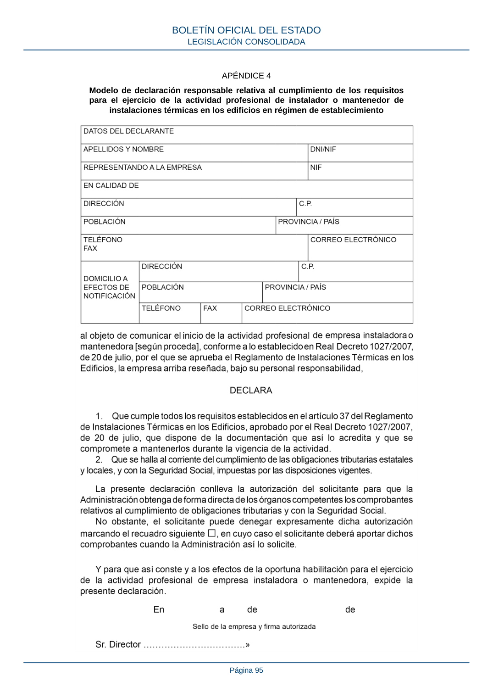

RITE · Página 95 · versión 2022-08-02
SHA256: ad1680c83bf4c7f5c656af1794c32ad0669ad9f36ac293737ff3f95177ff7b26 · página física 95 de 97 · métodos de encabezado
solo si están cotejados.
Formatos: Markdown · JSON de bloques · PDF p. 95 · imagen PNG
APÉNDICE 4 Modelo de declaración responsable relativa al cumplimiento de los requisitos para el ejercicio de la actividad profesional de instalador o mantenedor de instalaciones térmicas en los edificios en régimen de establecimiento BOLETÍN OFICIAL DEL ESTADO LEGISLACIÓN CONSOLIDADA Página 95
